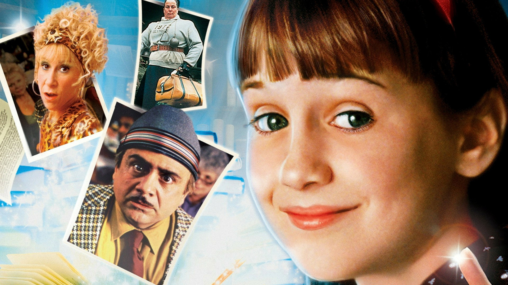

"You're On Your Own, Kid"
Estudiante: Ana Lia Escobar Chirinos
Matilda es una historia llena de imaginación, valentía y aprendizaje. Una película que nos recuerda la importancia de creer en nuestros sueños, descubrir nuestro talento y nunca dejar de luchar por lo que queremos.
Esta página fue creada como un recuerdo especial para:
Matilda es una niña extraordinariamente inteligente que vive en un entorno donde pocos valoran sus capacidades. Gracias a su amor por la lectura, su valentía y su imaginación, descubre que puede cambiar su destino y enfrentar las injusticias con inteligencia, bondad y determinación.
En este audio comparto por qué recomiendo la película Matilda y la enseñanza que me dejó esta maravillosa historia.
En este audio comparto cuál fue mi escena favorita de la película Matilda y por qué fue tan especial para mí.
Gracias por visitar mi proyecto sobre la película Matilda. Esta historia nos enseña que la inteligencia, la imaginación, la valentía y la bondad pueden ayudarnos a superar cualquier desafío.
✨ NUNCA DEJES DE CREER EN TUS SUEÑOS ✨